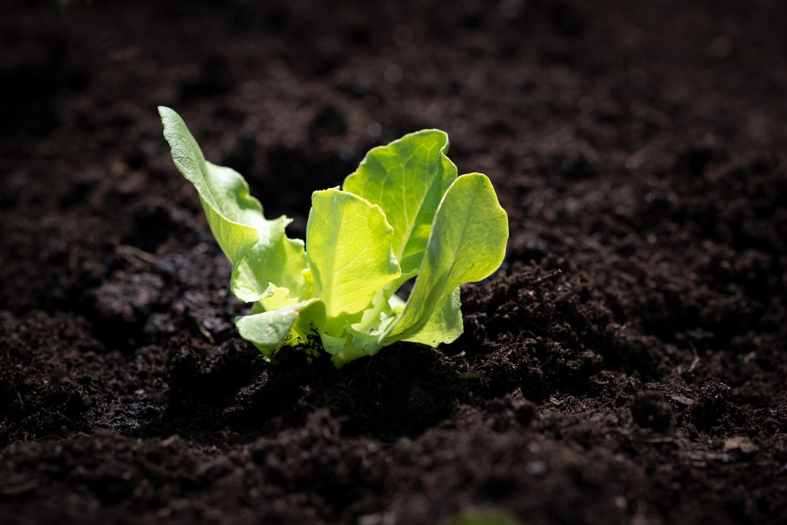

Dicas e tutoriais de como realizar o plantio de Alface
Como plantar:
Para semear a Alface diretamente no jardim, basta plantar as sementes a cerca de 5 cm
de profundidade e regá-las. Portanto, é simples assim! Espace as semeaduras de acordo
com as instruções do pacote que são baseadas no tamanho da Alface madura.
A alface-chefe geralmente deve ser plantada dentro de casa, pois o clima quente desencadeia
“aparafusamento” na Alface, interrompendo o crescimento das folhas e introduzindo um sabor
amargo. Portanto, em climas quentes, proteja a Alface ou procure por uma variedade resistente ao calor.
-
Você deve planejar plantar a Alface assim que o solo for viável. Portanto, escolha uma área com solo que drene
bem e receba bastante sol. Use um leme de solo ou uma pá para quebrar o solo e remover pedras, paus e raízes da área.
-
Misture em adubo ou fertilizante equilibrado na terra pelo menos uma semana antes do plantio. Além disso, opcionalmente,
você pode aplicar um fertilizante com nitrogênio ao longo das plantas após cerca de três semanas, quando as folhas tiverem
quatro polegadas (10 cm) de largura. -
A Alface é resistente ao frio, então você pode plantá-las diretamente no solo cerca de duas semanas antes da última geada
da primavera esperada ou até seis semanas de antecedência, se protegida por molduras frias ou túneis.
Coloque as sementes sobre o solo cultivado e, em seguida, espalhe cerca de 1 ⁄ 2 polegada (1,3 cm) de solo sobre elas. Portanto,
um pacote de sementes cobrirá cerca de 30,5 m (100 pés). Regue bem a sementes após o plantio.
-
Se as folhas parecerem murchas, elas precisam ser regadas. Além disso, dê à Alface uma leve aspersão todos os dias, e sempre que
as folhas parecerem um pouco frouxas.
-
Ao colher alfaces soltas, use uma tesoura ou uma faca para remover as folhas maduras sem prejudicar o resto da planta. Você pode
começar a fazer isso assim que as folhas atingirem o tamanho dessas encontradas em mercearias, feiras e mercados em gerais. Além
disso, remova toda a planta depois de algumas semanas, ou a planta ficará amarga e começará a germinar.